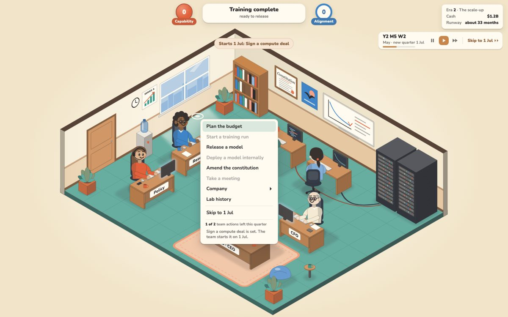

You asked for time that flows on its own, like Game Dev Tycoon. There are five small choices below, each with a picture from the real game. My recommendation is 1A 2A 3A 4A 5B: a running clock with pause and fast buttons, built tonight for the submission, with a deeper version after it. Click the options you want, then copy your picks from the bar at the bottom.

The recommended combination in era 2. The date runs by itself; the compute deal you just picked starts when the new quarter begins on 1 July.
Recommended picks
1AThe clock runs, and your team acts at each new quarter, month or week.
2AEvery quarter, month or week takes the same real time, about 45 seconds. A full game is about 15 minutes of running clock.
3AYour team can take 2 actions per quarter, month or week.
4A"End turn" becomes "Skip to 1 Jul" for impatient players.
5BBuild this tonight, then make actions start instantly (option 1C) after the submission.
Not a choice: the clock pauses for every card, meeting and dialog.When a new quarter starts, the game answers any card you left open with its default answer. It also counts an unanswered President meeting as walking out. So the clock must stop while you decide, then carry on at the speed you had.
⚠️
Game Dev Tycoon has no pause, play or fast buttons. Its speed is chosen once, before a game starts, as the number of in-game years, and you can't change it later. You can only pause by opening the menu or certain dialogs. A fan mod exists just to add speed buttons.
The pause and fast buttons in these pictures come from RimWorld and the Paradox strategy games, where players expect them. The sources agree, including a reply from Game Dev Tycoon's developer, but I read them through summaries, not the full pages.
1
How does time move?
This choice matters most. It decides whether actions start the moment you click, or when the next quarter, month or week begins.
2
How fast does the calendar run in each era?
The game's rounds shrink from a quarter (eras 1 and 2) to a month (eras 3 and 4) to a week (era 5). So either every round takes the same real time, or the calendar runs at one steady speed. It can't do both. Bars show real minutes of running clock per era; era 5 is in coral.
3
What limits how much you can do?
Today you get 2 moves per turn. Game Dev Tycoon has no such limit; money, staff and time hold you back instead.
4
What happens to "End turn"?
The clock sits under the info box in the top right. These are the three versions of it.
5
When does it ship?
Submissions close on 2026-09-27 at 12:00 AM PT, which is tonight. The release lane is editing the same menu files right now, so tonight's build has to be coordinated with it.
Where this comes from
The full research report is docs/research/realtime-time-flow/report.md on branch realtime, with three notes beside it: how Game Dev Tycoon's time works, how other games run a clock, and every place our game assumes turns. The mockups come from docs/design/mockups/K2-realtime.html on the same branch, drawn over a real era-2 save (seed 10).
I checked the claims about our code myself in sim/turn.js, sim/data/eras.js, ui/hud.js and ui/game.js. ⚠️ Most claims about other games rest on search summaries or summarized page fetches, not full reads, and the report marks each one. ⚠️ The only real-seconds-per-week figure for Game Dev Tycoon (about 5 seconds) is one reviewer's impression. The 45, 60, 40 and 30 second lengths in choice 2 are my proposals, not measured numbers.